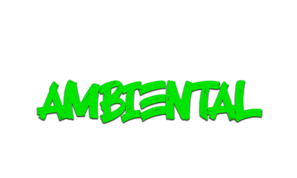

powered by

CALIDAD DEL AIRE
Visualiza registros abiertos sobre calidad del aire, reportes de incendios activos, alertas del clima y otros indicadores ambientales.
Atención: el mapa podría requerir un alto consumo de datos. Algunos dispositivos móviles podrían no ser del todo compatibles, se recomienda uso desde notebook o PC con buena conexión a Internet. Todos los datos abiertos son provistos por IQAir.
Atención: esta versión es una demo. Ver mockup completo.